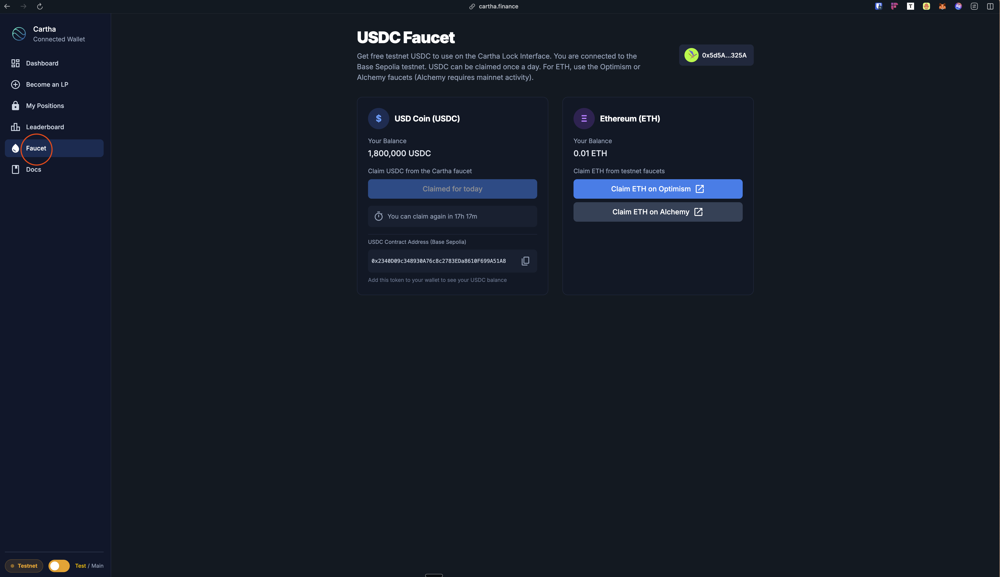
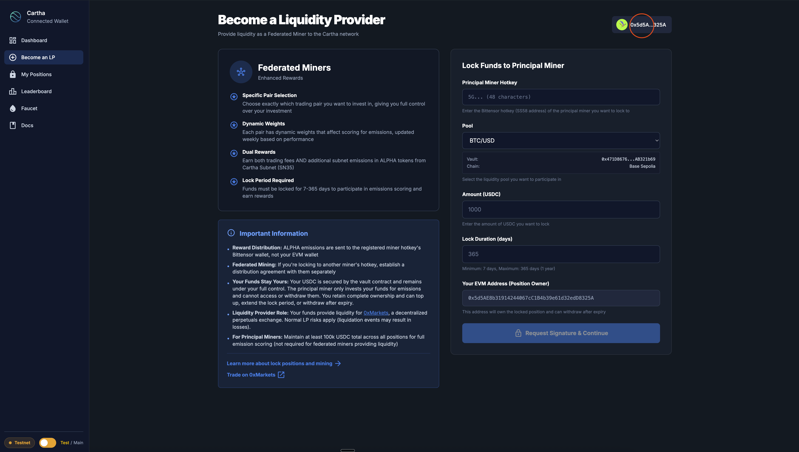
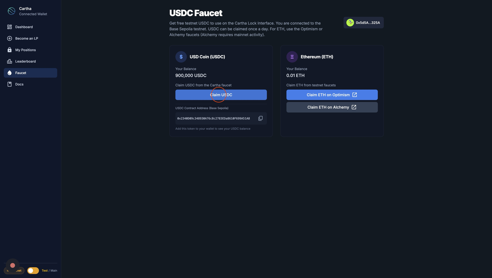
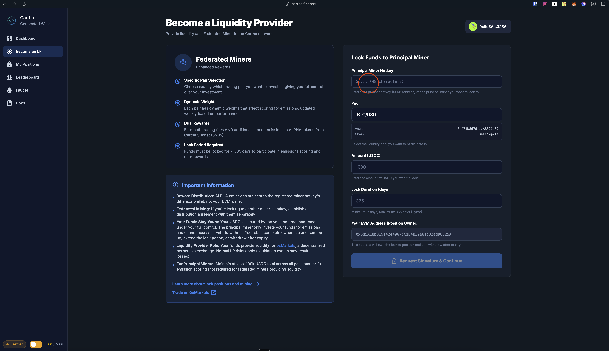
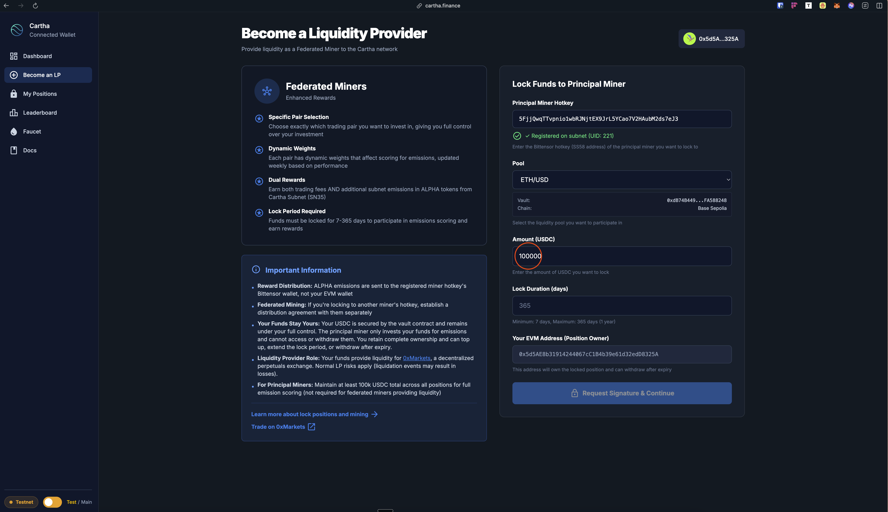
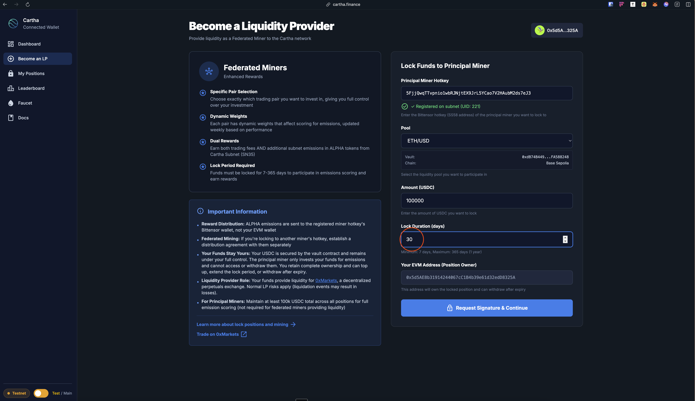
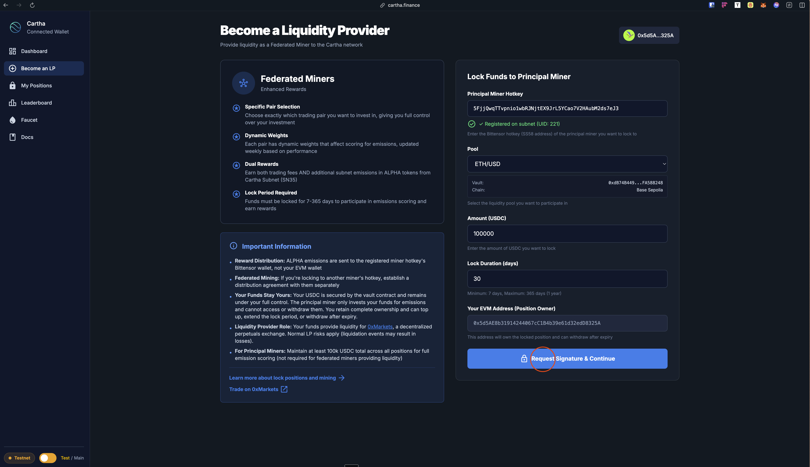
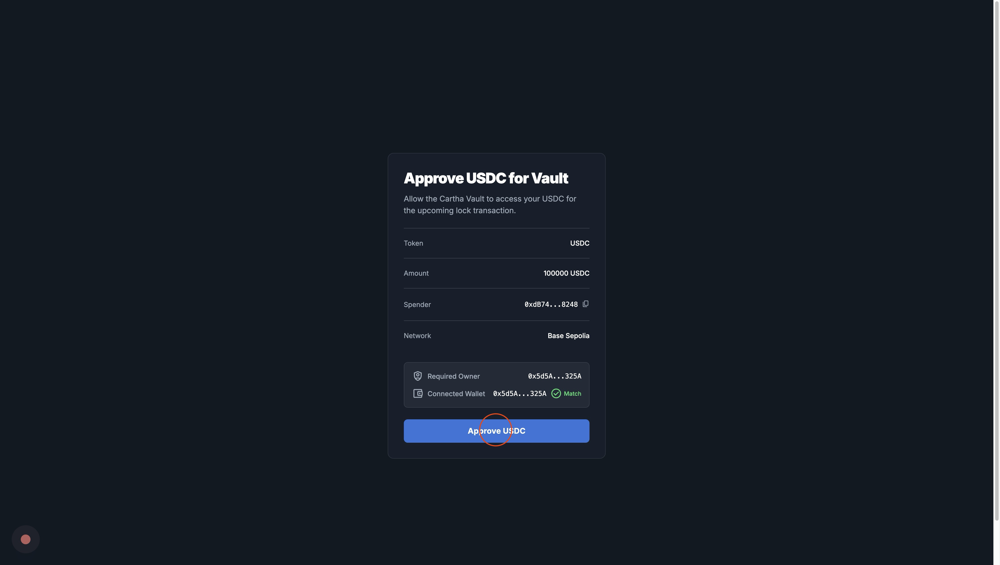
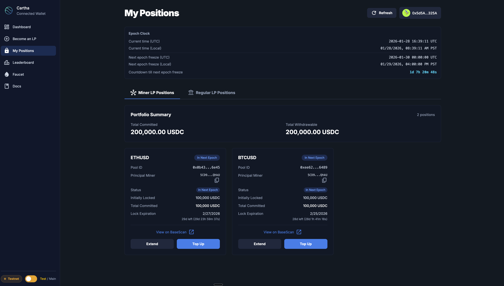

Miner Guide - Cartha Testnet
Complete guide for becoming a liquidity provider (miner) on Cartha testnet using the web interface.
Web Interface: https://cartha.finance
CLI Repository (for registration only): cartha-cli
Overview
Becoming a miner on Cartha testnet involves two main steps:
- Register your hotkey to the Bittensor subnet (requires CLI)
- Lock USDC funds to provide liquidity (done via web interface)
Prerequisites
Before you begin, ensure you have:
- ✅ Bittensor wallet set up (coldkey + hotkey)
- ✅ MetaMask (or other EVM wallet) installed
- ✅ Base Sepolia network added to MetaMask
- ✅ Testnet ETH in your wallet (for gas fees)
- ✅ Testnet USDC in your wallet (get from faucet)
- ✅ Python 3.11 installed (for CLI registration only)
- ✅ Testnet TAO in your Bittensor wallet (for registration)
Step 1: Get Testnet Tokens
Add Base Sepolia Network to MetaMask
- Open MetaMask and click the network dropdown
- Click "Add Network" or "Add a network manually"
Enter the following details:
Network Name: Base Sepolia RPC URL: https://sepolia.base.org Chain ID: 84532 Currency Symbol: ETH Block Explorer URL: https://sepolia.basescan.orgClick "Save" and switch to Base Sepolia network
Quick Add (MetaMask):
You can also use the Chainlist website:
- Visit https://chainlist.org/
- Search for "Base Sepolia"
- Click "Connect Wallet" and approve the connection
- Click "Add to MetaMask" and confirm
Get Testnet ETH (for gas fees)
- Visit: https://console.optimism.io/faucet
- Select "Base Sepolia" network
- Connect wallet and request tokens
- Wait a few minutes for the transaction to complete
Get Testnet USDC (for liquidity)
Visit the Cartha faucet to claim testnet USDC:
- Go to https://cartha.finance

- Click on "Faucet" in the navigation bar

- Connect your wallet - Click "Connect Wallet" and make sure you're connected to Base Sepolia network

- Click "Claim USDC" to receive testnet tokens

- You'll receive 1,000,000 testnet USDC per claim
- Cooldown: 24 hours between claims (per wallet address)
Get Testnet TAO (for registration)
- Visit: https://app.minersunion.ai/testnet-faucet
- Request testnet TAO to your Bittensor wallet
Step 2: Register Your Hotkey (CLI Required)
To participate as a miner, you need to register your Bittensor hotkey to the Cartha subnet. This step requires the Cartha CLI.
Install Cartha CLI
pip install cartha-cli
Verify the installation:
cartha --help
Configure Environment (Optional)
# Optional: Set testnet verifier URL
export CARTHA_VERIFIER_URL="https://cartha-verifier-826542474079.us-central1.run.app"
# Optional: Bittensor network configuration
export CARTHA_NETWORK="test"
export CARTHA_NETUID=78
Register to Subnet
Interactive mode (recommended):
cartha miner register --network test
The CLI will prompt you for your wallet names.
Or with all arguments:
cartha miner register --wallet-name <coldkey> --wallet-hotkey <hotkey> --network test
Example:
cartha miner register -w cold -wh hot -n test
This will:
- Register your hotkey to subnet 78 (testnet)
- Fetch your slot UID
- Display your registration details
Important: Save the output, especially your hotkey SS58 address - you'll need it for locking funds via the web interface.
Step 3: Lock Funds via Web Interface
Now that your hotkey is registered, you can lock USDC funds to provide liquidity using the Cartha web interface.
Navigate to "Become an LP"
- Go to https://cartha.finance
- Click on "Become an LP" in the navigation bar

- You'll see the Federated Miners option with a lock flow form on the right
Enter Your Miner Details
Note: Make sure your wallet is still connected to Base Sepolia network (you connected it earlier during the faucet step).
- Enter your Principal Miner Hotkey - This is the SS58 address from your registration in Step 2

The system will verify your hotkey is registered on the subnet (UID: 212 shown means registered).
- Select a Pool - Choose which trading pair you want to provide liquidity for (BTC/USD, ETH/USD, etc.)

- Enter Amount - Specify how much USDC you want to lock (e.g., 100000 USDC)

- Set Lock Duration - Choose how many days to lock your funds (minimum 7 days, maximum 365 days)

Execute Transaction
- Request Signature & Continue - Click the button to proceed

- Approve USDC - First, you need to approve the vault contract to spend your USDC

Approve the transaction in your wallet (this requires gas fees in ETH).
- Lock Position - After approval, the second transaction will lock your USDC in the vault

Confirm the lock transaction in your wallet.
Verify Your Position
- Wait for confirmation - It may take 30 seconds to 5 minutes for the position to be processed

- View your positions - Navigate to "My Positions" to see your active locks

You'll see:
- Pool ID and trading pair
- Principal Miner hotkey
- Lock status
- Initially locked amount
- Total committed amount
- Lock expiration date
- Options to Extend or Top Up your position
Important Notes
Transaction Requirements:
- ✅ Must be connected to Base Sepolia network
- ✅ Need testnet ETH for gas fees
- ✅ Need testnet USDC in your wallet
- ✅ Two transactions required: Approve + Lock
Managing Positions:
- Visit My Positions to view all your locks
- Use "Extend" to increase lock duration
- Use "Top Up" to add more USDC to existing position
Multiple Positions:
- ✅ Same hotkey + Same pool + Different EVM wallet → Creates separate position
- ❌ Same hotkey + Same pool + Same EVM wallet → Use "Top Up" instead
Rewards:
- Rewards are distributed weekly based on your locked position
- Lock before the epoch ends to be included in the next reward cycle
- Longer lock periods may receive higher rewards
Step 4: Check Your Miner Status (Optional)
You can verify your miner status using the CLI or by viewing "My Positions" on the web interface.
Via Web Interface (Recommended)
Simply visit https://cartha.finance/positions to see all your active positions.
Via CLI
# Interactive mode
cartha miner status
# Or with arguments
cartha miner status --wallet-name <coldkey> --wallet-hotkey <hotkey> --network test
This shows:
- Miner state and pool information
- All active pools with amounts and expiration dates
- Days remaining countdown
- Registration status
Available Testnet Pools
| Pool Name | Vault Address |
|---|---|
| BTC/USD | 0x471D86764B7F99b894ee38FcD3cEFF6EAB321b69 |
| ETH/USD | 0xdB74B44957A71c95406C316f8d3c5571FA588248 |
| EUR/USD | 0x3C4dAfAC827140B8a031d994b7e06A25B9f27BAD |
Network: Base Sepolia (Chain ID: 84532)
You can select any of these pools when locking funds via the web interface. The pool selection is handled automatically in the UI.
Common CLI Commands (Reference)
# Register to subnet (required once)
cartha miner register --wallet-name <coldkey> --wallet-hotkey <hotkey> --network test
# Check miner status
cartha miner status --wallet-name <coldkey> --wallet-hotkey <hotkey> --network test
# View help
cartha --help
cartha miner --help
Note: Locking funds is now done via the web interface at https://cartha.finance, not through CLI.
Troubleshooting
"Hotkey not registered" or "Invalid hotkey"
Problem: Hotkey is not registered on the subnet
Solution:
- Register your hotkey first using
cartha miner register --network test - Verify you're using the correct network (
test) and netuid (78) - Check that you have testnet TAO in your Bittensor wallet
- Make sure you're entering the correct SS58 address in the web interface
"Transaction failed" in MetaMask
Problem: Approval or lock transaction failed
Solution:
- Check Network: Make sure you're on Base Sepolia network (Chain ID: 84532)
- Check Gas: Ensure you have enough testnet ETH for gas fees
- Check USDC Balance: Ensure you have enough testnet USDC in your wallet
- Check Approval: Make sure the first approval transaction completed successfully
- Wait and Retry: Base Sepolia may be slower than mainnet - wait a bit and retry
"Insufficient funds" or "Not enough ETH"
Problem: Don't have enough testnet ETH for gas
Solution:
- Visit https://console.optimism.io/faucet
- Select "Base Sepolia" network
- Request testnet ETH to your wallet address
- Wait a few minutes for the transaction to complete
- Retry your transaction
"USDC balance is zero" or "No USDC found"
Problem: Don't have testnet USDC tokens
Solution:
- Visit the Cartha faucet at https://cartha.finance/faucet
- Connect your wallet and claim 1,000,000 testnet USDC
- Cooldown: 24 hours between claims per wallet
- Verify receipt on BaseScan Sepolia
"Position already exists"
Problem: You're trying to create a duplicate position with the same hotkey, pool, and wallet
Solution:
- Use the Top Up button on the "My Positions" page to add more USDC to your existing position
- Use the Extend button to increase the lock duration
- Or use a different EVM wallet address to create a separate position
"Wallet not connected" or "Wrong network"
Problem: Your wallet is not connected or on the wrong network
Solution:
- Click "Connect Wallet" in the top right corner
- Select your wallet provider (MetaMask, Coinbase Wallet, WalletConnect, etc.)
- Make sure you're connected to Base Sepolia network
- If you're on the wrong network, switch to Base Sepolia in your wallet
Position not showing after locking
Problem: Lock transaction succeeded but position doesn't appear
Solution:
- Wait 30 seconds to 5 minutes for the verifier to process your lock
- Click the Refresh button on "My Positions" page
- The verifier automatically detects your lock and adds you to the upcoming epoch
- If it still doesn't appear after 5 minutes, check the transaction on BaseScan
Quick Start Checklist
Before You Begin
- [ ] Bittensor wallet created (coldkey + hotkey)
- [ ] Python 3.11 installed
- [ ] Cartha CLI installed (
pip install cartha-cli) - [ ] MetaMask (or other EVM wallet) installed
- [ ] Base Sepolia network added to MetaMask
- [ ] Testnet ETH in your wallet (from faucet)
- [ ] Testnet USDC in your wallet (from Cartha faucet)
- [ ] Testnet TAO in your Bittensor wallet (for registration)
Quick Setup Steps
Get Tokens
- Get testnet ETH from https://console.optimism.io/faucet
- Get testnet USDC from https://cartha.finance/faucet
- Get testnet TAO from https://app.minersunion.ai/testnet-faucet
Register Your Hotkey
pip install cartha-cli cartha miner register --wallet-name <coldkey> --wallet-hotkey <hotkey> --network testSave your hotkey SS58 address!
Lock Funds via Web Interface
- Go to https://cartha.finance
- Click "Become an LP"
- Enter your hotkey SS58 address
- Choose pool, amount, and lock duration
- Connect wallet (Base Sepolia network)
- Approve USDC transaction
- Confirm lock transaction
Verify Your Position
- Visit https://cartha.finance/positions
- Your position should appear within 30 seconds to 5 minutes
Ready to become a miner? Visit https://cartha.finance and start providing liquidity today!